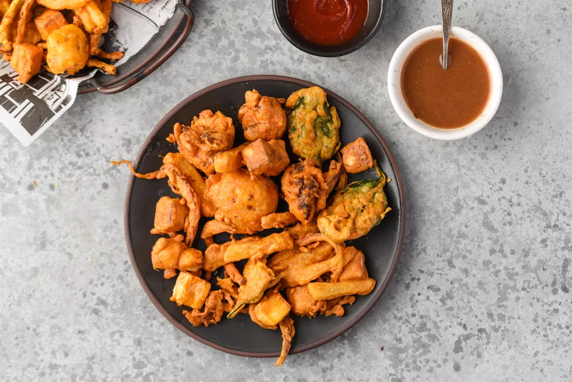

Bhajias

A bhajia is any bite-sized vegetable that has been coated in a delicious gram flour batter and then deep-fried to perfection. Also known as pakoras, these bites are very common street food found all over the Indian subcontinent and in plenty of Indian menus around the world.
Ingredients
- 1 cup Bengal gram flour
- 1/2 teaspoon red chili powder
- 1 pinch asafoetida
- 1/2 teaspoon turmeric
- teaspoon thymol seeds, or carom seeds
- 1 medium red onion
Steps
- Mix the gram flour and all the spices with a little water at a time in a bowl, to make a thick batter, slightly thicker than pancake batter. Add salt to taste.
- If using cauliflower, separate the florets into bite-sized pieces. The potatoes and onions should be thinly sliced.
- Preheat oil and reduce the flame to medium. This will allow the bhajias to cook well both on the outside and inside.
- Coat the vegetables well with batter, and then deep-fry till golden.
- Drain on paper towels and serve with tamarind chutney or tomato ketchup.
Home